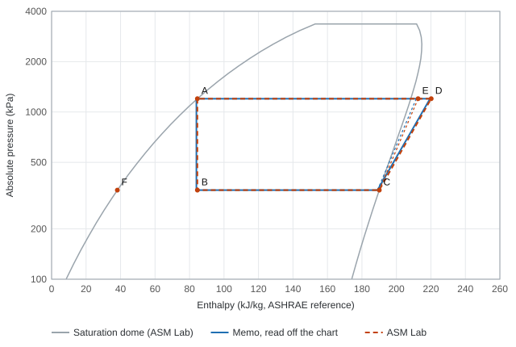

Worked examples: refrigerant charts
The questions come from the MINN3019A mine ventilation course (tutorials, class calculations, self-study problems and lecture slides). Each one is set out as the question, the hand solution as in the memo, and then the same question answered with ASM Lab, with the difference from the memo. Memo values read off psychrometric charts carry the chart's reading accuracy, about 0.3 kJ/kg on sigma heat and 0.2 °C on a temperature, so differences of that size are reading differences, not errors. ASM Lab computes the refrigerant properties from the Peng-Robinson equation of state, on the same reference as the course charts (h = 0 for saturated liquid at -40 °C; h = 200 kJ/kg at 0 °C for R-134a). Its accuracy is that of a chart: about 1 % on pressures and 2 % on vapour enthalpies.
An R-12 plant at 341 and 1 201 kPa¶
Paper 2, October 2018, question 1.
Measurements on an underground cooling plant: evaporator water 39.7 l/s, 22.8 °C in and 7.7 °C out, evaporating pressure 341 kPa (absolute); condenser water 70.2 l/s, 37.3 °C in and 44.8 °C out, condensing pressure 1 201 kPa (absolute); barometric pressure 116 kPa; electric input to the compressor motor 645 kW; discharge temperature 66 °C. The plant is a single-stage R-12 machine driven through a gearbox (98 %) by a motor (94 %). The water flow measurements are suspect; the electrical power and the pressures are reliable. Read the cycle off the P-H chart and find the gauge pressures, compressor efficiency, actual and ideal work of compression, refrigerant mass and volume flow, plant duty and the correct water flows.
Hand solution¶
Plotted on the R-12 chart: H_A = H_B = 84, H_C = 189, H_D = 219.5, H_E = 211.5 and H_F = 38.7 kJ/kg; specific volume at the compressor inlet 0.052 m³/kg.
With ASM Lab¶
Task: Read the cycle with the refrigeration calculator
- Open Tools > Calculators > Refrigeration. Choose R-12 (Freon 12) and Absolute pressures: 341 and 1 201 kPa.
- Choose Discharge temperature and enter 66 °C.
- ASM Lab places the points: evaporating at 3.3 °C and condensing at 49.4 °C, H_C = 190.1 and H_D = 220.2 kJ/kg. The assistant does the same with its calculate tool, given the actual work of compression to fix the flow.

| Quantity | Memo | ASM Lab | Error |
|---|---|---|---|
| H_A, liquid leaving the condenser (kJ/kg) | 84.0 | 84.6 | 0.66 % |
| H_C, vapour into the compressor (kJ/kg) | 189.0 | 190.1 | 0.56 % |
| H_D, actual discharge (kJ/kg) | 219.5 | 220.2 | 0.31 % |
| H_E, isentropic discharge (kJ/kg) | 211.5 | 212.6 | 0.51 % |
| H_F, liquid at the evaporating pressure (kJ/kg) | 38.7 | 38.1 | 1.46 % |
| Specific volume at the compressor inlet (m³/kg) | 0.0520 | 0.0510 | 1.88 % |
| Compressor efficiency (%) | 73.8 | 74.8 | 1.31 % |
| Actual work of compression (kW) | 594.2 | 594.2 | 0.00 % |
| Ideal work of compression (kW) | 438.5 | 444.3 | 1.31 % |
| Refrigerant mass flow (kg/s) | 19.50 | 19.73 | 1.19 % |
| Volume flow at the compressor inlet (m³/s) | 1.014 | 1.007 | 0.71 % |
| Plant duty (kW) | 2 048 | 2 082 | 1.66 % |
| Condenser water (l/s) | 84.1 | 85.2 | 1.33 % |
An R-11 plant with a faulty condenser gauge¶
Refrigeration self-study problem 2.
Readings on an underground R-11 (Freon 11) system: condenser temperature 45 °C (the pressure meter is faulty); evaporator pressure 50.5 kPa vacuum with a barometric pressure of 110 kPa; compressor outlet 68 °C; condenser water 82.1 l/s, 37.4 °C in and 43.2 °C out. Plot the cycle and find the Carnot COP, actual COP, cycle efficiency, flash gas, compressor efficiency, power-to-cooling ratio, refrigerant mass flow, volume flows into and out of the compressor, plant duty and compressor power.
Hand solution¶
The evaporating pressure is 110 − 50.5 = 59.5 kPa absolute; the memo reads the evaporating temperature off its chart as 5 °C. From the chart: H_A = H_B = 73, H_C = 225.5, H_D = 260, H_E = 250.5 and H_F = 38.3 kJ/kg.
With ASM Lab¶
Task: The same cycle in the calculator
- Choose R-11 (Freon 11). With Absolute pressures and 59.5 kPa, ASM Lab gives an evaporating temperature of 9.4 °C, not the 5 °C read in the memo.
- To compare like with like, enter the memo's temperatures: evaporating 5 °C, condensing 45 °C, discharge 68 °C, and the condenser water to fix the flow.
| Quantity | Memo | ASM Lab | Error |
|---|---|---|---|
| H_A (kJ/kg) | 73.0 | 70.1 | 3.92 % |
| H_C (kJ/kg) | 225.5 | 222.3 | 1.40 % |
| H_D (kJ/kg) | 260.0 | 257.5 | 0.98 % |
| H_E (kJ/kg) | 250.5 | 247.0 | 1.42 % |
| H_F (kJ/kg) | 38.3 | 36.1 | 5.87 % |
| Carnot COP | 6.95 | 6.95 | 0.05 % |
| Actual COP | 4.42 | 4.34 | 1.92 % |
| Cycle efficiency (%) | 63.6 | 62.3 | 1.98 % |
| Flash gas (%) | 18.5 | 18.3 | 1.08 % |
| Compressor efficiency (%) | 72.5 | 70.1 | 3.32 % |
| Power-to-cooling ratio | 0.226 | 0.231 | 2.07 % |
| Refrigerant mass flow (kg/s) | 10.70 | 10.64 | 0.52 % |
| Volume flow into the compressor (m³/s) | 3.60 | 3.52 | 2.28 % |
| Volume flow out of the compressor (m³/s) | 0.96 | 1.04 | 7.99 % |
| Plant duty (kW) | 1 632 | 1 620 | 0.73 % |
| Compressor power (kW) | 369.2 | 373.7 | 1.22 % |
An R-134a plant: temperatures from the gauge pressures¶
Paper 2, October 2013, question 4.1.
An R-134a plant: evaporator gauge 186.5 kPa, condenser gauge 1 046.6 kPa, barometric pressure 112.5 kPa. The measured refrigerant temperatures are suspect. Plant duty 3 879 kW and compressor input 1 072 kW. Find the true evaporating and condensing temperatures, the Carnot COP, the actual COP and the cycle efficiency.
Hand solution¶
With ASM Lab¶
Task: Saturation temperatures from gauge pressures
- In Refrigeration, choose R-134a and Absolute pressures 299 and 1 159.1 kPa, or give the assistant the gauge readings and the barometric pressure.
- ASM Lab gives 0.68 °C and 44.93 °C and a Carnot COP of 6.19.
| Quantity | Memo | ASM Lab | Error |
|---|---|---|---|
| Evaporating temperature (°C) | 0.55 | 0.68 | 23.13 % |
| Condensing temperature (°C) | 44.90 | 44.93 | 0.06 % |
| Carnot COP | 6.20 | 6.19 | 0.19 % |
| Actual COP | 3.60 | 3.62 | 0.51 % |
| Cycle efficiency (%) | 58.0 | 58.5 | 0.81 % |
Summary of the errors¶
| Compared values | Minimum error | Median error | Maximum error |
|---|---|---|---|
| 34 | 0.00 % | 1.27 % | 23.13 % (Evaporating temperature) |